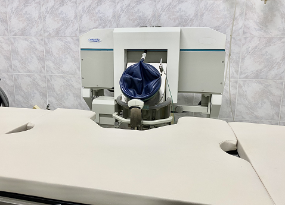
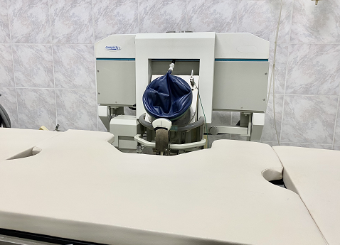

Litotricia Extracorpórea
La litotricia extracorpórea es un tratamiento no invasivo que consiste en la fragmentación de la litiasis,
a través de la aplicación de ondas de choque generadas externamente,
decir fuera del cuerpo. El impacto de esta energía en el calculo, permite que este se desintegre
y asi poder eliminar los fragmentos convertidos en arenilla a través de la orina.


 
